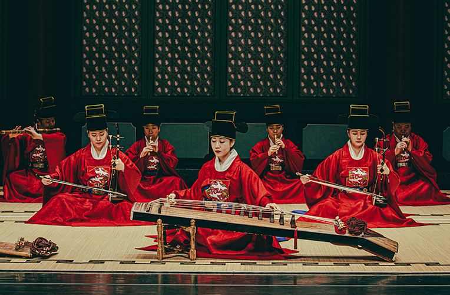
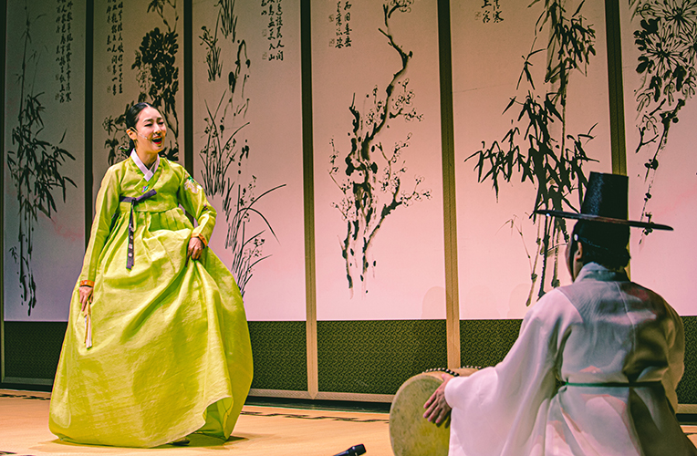

토요상설 <토요신명 2023>
- 일시
- 2.4.(토) ~ 9.23.(토) 매주 토요일 15:00
- 장소
- 예지당
- 관람료
- A석 10,000원 B석 8,000원
- 출연진/연출진
- 국립부산국악원 국악연주단
- 관람연령
- 취학아동이상
매주 토요일, 자연과 희로애락을 담은 우리 춤 우리 소리와 함께.
자연과 희로애락이라는 여섯 가지의 주제 악·가·무 종합무대. 바람에 구름이 흐르고, 그 구름에 비가 내리며, 천둥이 물러간 자리에 무지개가 나타나 맑게 갠 하늘을 만날 수 있듯이 우리 춤과 소리로 우리네 삶을 위로하고 희망을 선사한다.
세부프로그램
제 1주제: 솔솔 부는 바람처럼 제 2주제: 흘러가는 구름처럼 제 3주제: 흩날리는 비처럼 제 4주제: 몰아치는 천둥처럼 제 5주제: 화사한 무지개처럼 제 6주제: 맑게 갠 하늘처럼
2월
4일
제1주제
관현합주 '자진한잎', 판소리, 무고, 금회북춤, 가야금산조, 웃다리농악가락
11일
제2주제
수룡음, 가곡, 진주교방굿거리춤, 진쇠춤, 해금산조, 삼도농악가락
18일
제3주제
천년만세, 가야금병창, 승무, 대금산조, 남도민요, 강강술래
25일
제4주제
단소 독주/산조, 입체창, 춘앵전, 경기/서도 민요, 아쟁산조, 진주검무
3월
4일
무용단 정기공연
11일
기악단 정기공연
18일
제5주제
관악영산회상 '상령산', 가사, 장구춤, 동래학춤, 거문고산조, 태평소와 사물놀이남도민요, 강강술래
25일
제6주제
대금독주 '상령산풀이', 경기잡가, 버꾸춤, 부채춤, 피리산조, 동해무속사물
4월
1일
연희부 정기공연
8일
제1주제
관현합주 '자진한잎', 판소리, 무고, 금회북춤, 가야금산조, 웃다리농악가락
15일
성악단 정기공연
22일
제2주제
수룡음, 가곡, 진주교방굿거리춤, 진쇠춤, 해금산조, 삼도농악가락
29일
제3주제
천년만세, 가야금병창, 승무, 대금산조, 남도민요, 강강술래
5월
6일
한류확산공연
13일
한류확산공연
20일
제4주제
단소 독주/산조, 입체창, 춘앵전, 경기/서도 민요, 아쟁산조, 진주검무 정기공연
27일
제5주제
관악영산회상 '상령산', 가사, 장구춤, 동래학춤, 거문고산조, 태평소와 사물놀이
6월
3일
제6주제
대금독주 '상령산풀이', 경기잡가, 버꾸춤, 부채춤, 피리산조, 동해무속사물
10일
제1주제
관현합주 '자진한잎', 판소리, 무고, 금회북춤, 가야금산조, 웃다리농악가락
17일
제2주제
수룡음, 가곡, 진주교방굿거리춤, 진쇠춤, 해금산조, 삼도농악가락
24일
제3주제
천년만세, 가야금병창, 승무, 대금산조, 남도민요, 강강술래
7월
1일
제4주제
단소 독주/산조, 입체창, 춘앵전, 경기/서도 민요, 아쟁산조, 진주검무
8일
제5주제
관악영산회상 '상령산', 가사, 장구춤, 동래학춤, 거문고산조, 태평소와 사물놀이
15일, 22일, 29일
영남춤축제
8월
5일, 12일
영남춤축제
19일
제6주제
대금독주 '상령산풀이', 경기잡가, 버꾸춤, 부채춤, 피리산조, 동해무속사물
26일
어린이공연
9월
2일
제1주제
관현합주 '자진한잎', 판소리, 무고, 금회북춤, 가야금산조, 웃다리농악가락
9일
제2주제
수룡음, 가곡, 진주교방굿거리춤, 진쇠춤, 해금산조, 삼도농악가락
16일
제3주제
제3주제 천년만세, 가야금병창, 승무, 대금산조, 남도민요, 강강술래
23일
제4주제
단소 독주/산조, 입체창, 춘앵전, 경기/서도 민요, 아쟁산조, 진주검무
* 공연내용과 일정은 사정에 따라 변경 될 수 있습니다.

